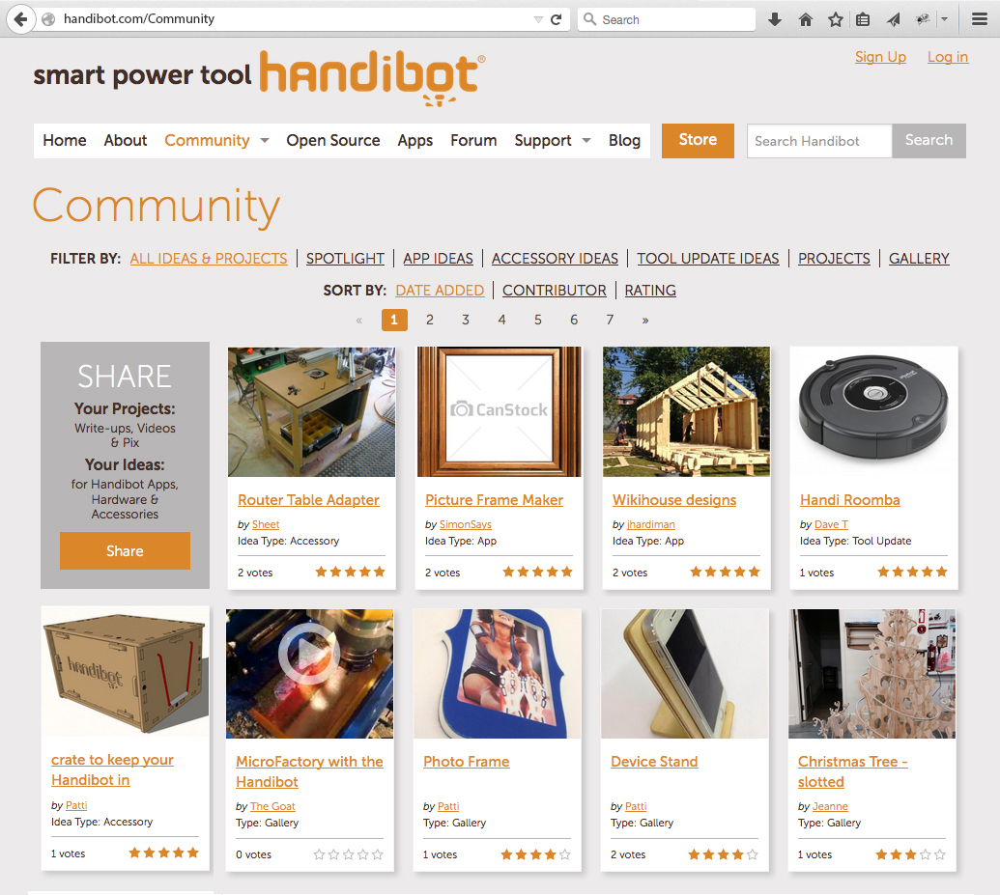

An Innovative Platform for
Digital Fabrication
FabMo is an open-source, digital fabrication and motion platform of software and hardware. Originated by the Handibot team at ShopBot Tools, FabMo has a powerful core motion system, G2, created by Synthetos. FabMo is available to be used and adapted by anyone, to run every digital smart tool imaginable, today and tomorrow. FabMo offers fabbers 3 essential freedoms.
Freedom of Access
Access your digital fabrication tool (whether subtractive CNC or additive 3D printer) from any device
FabMo will link your network-enabled devices to your digital fab tool. Access a tool from your phone or via any computer. Control the tool or just monitor the action. Do it wirelessly, or hardwire with ethernet or USB to achieve industrial robustness. Post job files from your cloud storage, or only use locally generated files. You have the freedom.
Freedom to Create
Generate toolpath files from a wide range of programs (CAD/CAM) or from digital-fabrication apps
FabMo supports a wide range of digital-fab workflows from traditional CAD > CAM approaches to a variety of "app" types. Some apps will provide utility functions and carry out common jobs, others will produce complex digital-fab projects whose parameters can be customized by users. FabMo supports several motion languages including OpenSBP and legacy g-code. Other languages may be added. Go FabMo to create, produce, and manufacture in ways that suit your style.
Freedom to Innovate
Modify FabMo to fit your needs or the needs of your specialized fabrication tools
We're encouraging the development of an open system that will evolve to meet the needs of the fabrication, motion, and robotics community and provide a platform for shared innovation. Several development-system hardware options are available for hardware designers, and the software is organized to be modular and understandable. At the lowest level, advanced, fast, and smooth motion is provided by G2 - a real-time, motion system core running on a dedicated microcontroller. At higher levels, a FabMo SBC manages files, projects, and apps and links your tool to the world.
The FabMo Story
We have two challenges in digital fabrication today.
The first challenge is the CAD to CAM workflow for generating tool-path files. The difficulty of doing CAD and CAM creates a tough hurdle, particulary for simple projects or routine work. The second challenge is that running the files that are generated from CAM output is made complicated by proprietary or idiosyncratic tool languages and by tool interfaces having restrictive connectivity and little interoperability.
With the FabMo digital fabrication and motion platform, we introduce a new concept for performing digital fabrication that frees access to tools and opens new paths of use. FabMo takes advantage of progress in microprocessors and microcontrollers, which now offer new, low-cost options for managing and driving digital fabrication equipment, both subractive and additive. The FabMo "Engine" looks out from a digital fab tool allowing access via a wide range of wired and wireless routes, and from almost any type of device, utilizing multiple and expandable motion languages. It efficiently feeds the FabMo "Core" -- a low-level, real-time, high-performance motion system producing beautiful fabbing movement.
FabMo links a fabrication tool to apps and projects. Such apps will make created content for digital fabrication more available and customizable to users' needs. FabMo links to environments for managing cloud apps, projects, and accounts.
The Hardware
(Options for Users and Developers)
FabMo is based on two hardware components: 1) an SBC (single board computer) on which the "Engine" - interface, communications, and management systems - runs; and 2) a 32bit ARM microprocessor the provides real-time environment for the "Core" motion functions.
- The SBC runs a minimal linux install that supports the FabMo Engine. Raspberry Pi and BeagleBone Black SBC's are currently supported.
- The real-time microcontroller is loaded with the G2 motion system. Our reference implementation is on the Atmel SAM3X8E. This microcontroller is found on the Arduino Due, which makes the Due a useful development board. This real-time component of the system is also available in the form ShopBot's lastest (V300) Control Card. This Control Card modularly conncets to a wide range of ShopBot CNC interface boards that provide drivers, I/O buffering, and isolation. In addition, the real-time module is available as the "V9-TinyG2" board from Synthetos with 4 stepper-motor drivers. Either of these latter two systems will interface to a wide range of motors and hardware and can be used for creating a variety of DIY, digital fab tools and projects.
BBB and Due: a Basic Development System

BBB and ShopBot Control Card and CNC Interface with Motor Drivers (shown on backside on right): a DIY CNC builder system
The Software
(Concepts and Organization)
FabMo is a collection of software components and well-documented APIs. The FabMo Engine, running in linux on the tool's SBC, relates a digital fab tool to the world; handles local user needs; manages the flow of jobs to the real-time core.
Programmed primarily in javascript with node.js, the FabMo Engine serves up a contemporary, mobile-friendly web interface. Several base modules provide run-times for different digital-fab-tool path languages and serve as models for creating others.
More importantly, FabMo provides a framework for developing and hosting "apps" that will contribute a wide range of usability to digital fab tools. An App Developer Kit provides instructions and a template for app development as well as several examples. Apps are written in the languages of the web (HTML, Javascript, Coffeescript, CSS, etc) so that as tools for the web grow, so do our tools for doing digital fabrication!
The FabMo "G2 Core" resides on the ARM microcontroller. It represents work of the Synthetos team. G2 is a sophisticated motion system: high speed (high step rates), advanced "S" shaped ramping for smooth and efficient accelerations and decelerations, while running in real time and not requiring fussing with PC timing functions or USB converters.